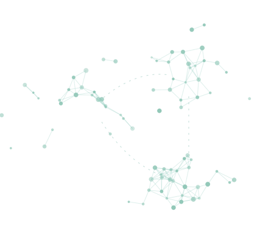

Single-cell &
computational biology
Learning how single-cell data can reveal differences between cell populations, with a focus on immune cells in fibrotic lung tissue.
scRNA-seq · Seurat · BioconductorB.STAT · INDIAN STATISTICAL INSTITUTE, KOLKATA
Learning statistics.
Exploring biology.
I’m a B.Stat student at ISI Kolkata, learning how statistics can help us understand biological data. I’m particularly interested in biostatistics and single-cell genomics.

I’m building a foundation in statistics while exploring its applications to biology and health.
For my undergraduate thesis, I’m learning to analyse single-cell RNA sequencing data from fibrotic lung tissue under Prof. Aritra Bhattacharya’s supervision. Reading projects and coursework are also helping me explore robust statistics, Bayesian decision theory, and probability.
There is a great deal I’m still learning: how to choose appropriate methods, understand their assumptions, and interpret results in their biological context.
Academic background ↗02 — LEARNING INTERESTS
Learning how single-cell data can reveal differences between cell populations, with a focus on immune cells in fibrotic lung tissue.
scRNA-seq · Seurat · BioconductorExploring how statistical models are used with biological and health data, and what their predictions can tell us.
Risk prediction · Genomic dataBuilding my understanding of robust statistics, inference in high dimensions, and Bayesian decision theory through coursework and reading.
Robust statistics · Probability03 — SELECTED WORK
Prof. Aritra Bhattacharya | 2026 – Present
An ongoing undergraduate thesis under Prof. Aritra Bhattacharya’s supervision. I’m learning to work with single-cell RNA sequencing data from fibrotic lung tissue, using R, Seurat, and Bioconductor to explore immune-cell populations and gene-expression patterns.
Sun Yat-Sen University Summer School Group Project | 2026
A summer-school group project exploring disagreement between models for Type 2 Diabetes risk prediction. This was an opportunity to practise health-data analysis and think about how different modeling choices affect predictions.
Statistical Methods IV Group Project | 2026
A Statistical Methods IV group project in which we studied Kernelized Spatial Depth (KSD) and compared depth-based approaches to outlier detection. I used the project to learn about robust methods, kernel-based ideas, and their empirical evaluation.
05 — BEYOND COURSEWORK
Personal reflections from BMS, BGKV, and ISI — and a space for travel stories as I write them.
GET IN TOUCH
I’m interested in learning from others working in biostatistics and computational biology, and in discussing student research opportunities.
mdsworld2006@gmail.com ↗